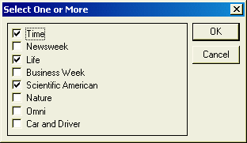

UI_GET_CHECK()
Syntax
Result_String as C = UI_GET_CHECK( Title as C, Default_String as C, Choice1 as C [, Choice2 as C [, ... [, Choice8 as C ]]] )
Argument | Description |
Title | The title of the dialog box. |
Default_String | Determines which choices are checked when the dialog box first appears. This string is a sequence of numbers indicating which choice (from 1 to 8) is to be checked. For example, the Default String "124" indicates that the first, second and fourth choices are checked when the dialog box appears. |
Choice1 | The label for the first check box. |
Choice2 ... Choice8 | Optional. Labels for up to seven additional check boxes. |
Description
UI_GET_CHECK() creates and displays a dialog box containing between 1 and 8 check box choices. Your response is returned as a Result_String which contains either a ? + ' or a ?-' for each checked or cleared choice. The character positions of each ? + ' (Check) or ?-' (No Check) in the Result_String directly correspond to the order of the check box choices. If the Cancel button is selected, an empty string ("") will be returned.
For example, the following script:
user_selection = ui_get_check("Select One or More", "135", "Time", "Newsweek", "Life", "Business Week", "Scientific American", "Nature","Omni", "Car and Driver") |
will display this dialog box:

When the OK button is selected with these choices, the following string is returned:
" + - + - + ---"
Limitations
Desktop applications only.
Example
Make check box selections.
select: user_selection = UI_GET_check("Select One or More", "135", "Time", "Newsweek", "Life", "Business Week", "Scientific American", "Nature","Omni", "Car and Driver") |
If user picks Cancel, end this script.
if user_selection = "" then end end if |
If no boxes are checked, give a message and prompt again.
if atc(" + ", user_selection) = 0 then ui_msg_box("Select One or More","Check at least one.") goto select end if |
Look at result string and print the magazine name for each " + ".
if substr(user_selection,1,1) = " + " then trace.writeln("Time") end if if substr(user_selection,2,1) = " + " then trace.writeln("Newsweek") end if if (user_selection,3,1) = " + " then trace.writeln("Life") end if if substr(user_selection,4,1) = " + " then trace.writeln("Business Week") end if if substr(user_selection,5,1) = " + " then trace.writeln("Scientific American") end if if substr(user_selection,6,1) = " + " then trace.writeln("Nature") end if if substr(user_selection,7,1) = " + " then trace.writeln("Omni") end if if substr(user_selection,8,1) = " + " then trace.writeln("Car and Driver") end if |
See Also
((User Interaction _UI_ Functions|User Interaction (UI) Functions))